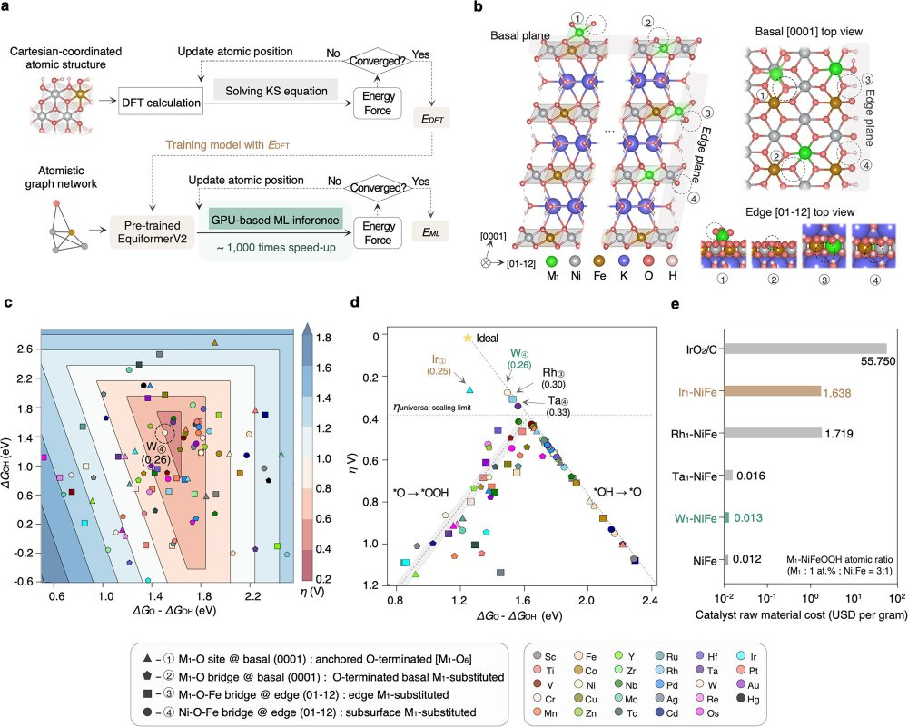

Jaehyun Kim, Ph.D.
Research directions
My work spans several directions across computational and experimental electrochemistry — from ML-guided catalyst design to operando mechanism and device-scale interfaces. The tungsten-single-atom study further down is one worked example.
ML-guided tungsten single atoms for noble-metal-free water electrolysis
One worked example of the directions above. In this first-author study, I fine-tuned EquiformerV2 on DFT data, screened the configuration space, and identified W₁-NiFeOOH. I synthesized it by cyclic electrodeposition, characterized it with operando Raman and synchrotron XAS, and tested it in an anion-exchange-membrane electrolyzer.

Selected publications
A few highlights below · full record on the publications page and Google Scholar. 1st / co-1st = first or co-first author.
Writing
Occasional research briefs and notes.